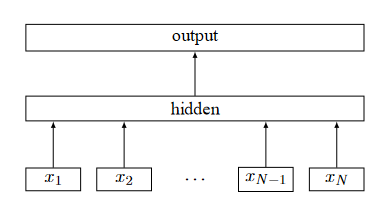

FastText实现文本分类


在本教程中，我们将在MindSpore中使用MindRecord加载并构建文本数据集，用户可以从教程中了解到如何：
创建迭代数据集
将文本转换为向量
对数据进行shuffle等操作
此外，本教程使用N-Gram，即N元语法模型来判断语句单词的构成顺序。N-Gram可以按照字节顺序，将文本内容进行大小为N的划窗操作，最终形成长度为N的字节片段序列。实践中经常使用二元或三元模型，本例通过将ngram参数设定为2，将二元模型应用在文本分类案例中。
注意：该教程环境为MindSpore1.2.0版本。
数据处理
本教程采用了AG_NEWS数据集，该数据集拥有超过 100 万篇新闻文章，该数据集仅采用了标题和描述字段，每一条数据有三列，第一列为标签（label），第二列为题目（title），第三列为内容（content），每种类别均拥有 30000 个训练样本和 1900 个测试样本。
点击下载文本分类AG_NEWS数据集 ，在教程的同级目录下新建data文件夹，将下载好的数据集存放在data中。
目录如下：
project
│ text_sentiment_ngrams_tutorial.ipynb
└─data
│ train.csv
│ test.csv
在进行其他操作之前，需要先安装sklearn和spacy工具包，并导入所需要的库并进行参数设置。
可在Jupyter Notebook中执行以下代码，完成工具包的安装及数据集的下载：
[ ]:
!pip install sklearn spacy -i https://pypi.tuna.tsinghua.edu.cn/simple
!mkdir -p ./data
!wget -N https://mindspore-website.obs.cn-north-4.myhuaweicloud.com/notebook/datasets/intermediate/ag_news_csv.tgz
!tar -zxvf ag_news_csv.tgz
!mv ./ag_news_csv/* ./data
配置环境
[1]:
import csv
import os
import re
import argparse
import ast
import html
import mindspore.common.dtype as mstype
import mindspore.dataset.transforms.c_transforms as deC
from mindspore import nn
from mindspore import context
from mindspore import dataset as ds
import mindspore.ops.operations as P
from mindspore.ops import composite as C
from mindspore.ops import functional as F
from mindspore.mindrecord import FileWriter
from mindspore import Tensor, Model, ParameterTuple
from mindspore.context import ParallelMode
from mindspore.common.initializer import XavierUniform
import spacy
import numpy as np
from sklearn.feature_extraction import FeatureHasher
from sklearn.metrics import accuracy_score, classification_report
本教程我们在GPU环境下，使用图模式运行实验。
[2]:
context.set_context(mode=context.GRAPH_MODE,save_graphs=False,device_target="GPU")
读取数据
定义_get_bucket_length和generate_gram函数，分别实现如下功能：
_get_bucket_length：将对应长度词句分类到相应的词句桶中。
generate_gram：为词句提供分词功能，此教程中取值为2。
[2]:
def _get_bucket_length(x, bts):
# 返回词句对应的长度
x_len = len(x)
for index in range(1, len(bts)):
if bts[index - 1] < x_len <= bts[index]:
return bts[index]
return bts[0]
def generate_gram(words, num=2):
# 生成步长为2的词
return [' '.join(words[i: i + num]) for i in range(len(words) - num + 1)]
在开始处理数据前，需要先定义填词的标志位，同时也需要创建保存向量和单词相互转换的两个字典。
[3]:
word2vec = dict()
vec2words = dict()
word2vec['PAD'] = 0
vec2words[0] = 'PAD'
word2vec['UNK'] = 1
vec2words[1] = 'UNK'
定义input_preprocess函数，首先将需要处理的文本拼接在一起，然后拼接的文本通过spacy_nlp来对词进行标注，然后通过实例化generate_gram将词条按照步长切分为词语，最后返回词语转为向量的列表。
[4]:
def input_preprocess(src_text1, src_text2, spacy_nlp, train_mode):
"""数据处理函数"""
non_str = '\\'
end_string = ['.', '?', '!']
str_html = re.compile(r'<[^>]+>')
src_text1 = src_text1.strip()
text_greater = '>'
text_less = '<'
# 拼接文本
if src_text1 and src_text1[-1] not in end_string:
src_text1 = src_text1 + '.'
if src_text2:
src_text2 = src_text2.strip()
sent_describe = src_text1 + ' ' + src_text2
else:
sent_describe = src_text1
if non_str in sent_describe:
sent_describe = sent_describe.replace(non_str, ' ')
sent_describe = html.unescape(sent_describe)
if text_less in sent_describe and text_greater in sent_describe:
sent_describe = str_html.sub('', sent_describe)
# 转换词向量
doc = spacy_nlp(sent_describe)
bows_token = [token.text for token in doc]
try:
tagged_sent_desc = '<p> ' + ' </s> '.join([s.text for s in doc.sents]) + ' </p>'
except ValueError:
tagged_sent_desc = '<p> ' + sent_describe + ' </p>'
doc = spacy_nlp(tagged_sent_desc)
ngrams = generate_gram([token.text for token in doc], num=2)
bo_ngrams = bows_token + ngrams
if train_mode is True:
for ngms in bo_ngrams:
idx = word2vec.get(ngms)
if idx is None:
idx = len(word2vec)
word2vec[ngms] = idx
vec2words[idx] = ngms
# 返回转为向量后的列表
processed_out = [word2vec[ng] if ng in word2vec else word2vec['UNK'] for ng in bo_ngrams]
return processed_out
定义common_block函数来完成以下功能： - 读取每条新闻信息的标签（label）。 - 根据每条新闻信息的长度分别进行相对应的处理。 - 获取input_preprocess函数得到的token长度。
[5]:
def common_block(_pair_sen, spacy_nlp):
"""新闻信息处理函数"""
label_idx = int(_pair_sen[0]) - 1
# 根据不同文本长度来处理数据
if len(_pair_sen) == 3:
src_tokens = input_preprocess(src_text1=_pair_sen[1],
src_text2=_pair_sen[2],
spacy_nlp=spacy_nlp,
train_mode=True)
src_tokens_length = len(src_tokens)
elif len(_pair_sen) == 2:
src_tokens = input_preprocess(src_text1=_pair_sen[1],
src_text2=None,
spacy_nlp=spacy_nlp,
train_mode=True)
src_tokens_length = len(src_tokens)
elif len(_pair_sen) == 4:
# 判断是否有三个文本，如果有的话先拼接前两个文本
if _pair_sen[2]:
sen_o_t = _pair_sen[1] + ' ' + _pair_sen[2]
else:
sen_o_t = _pair_sen[1]
src_tokens = input_preprocess(src_text1=sen_o_t,
src_text2=_pair_sen[3],
spacy_nlp=spacy_nlp,
train_mode=True)
src_tokens_length = len(src_tokens)
return src_tokens, src_tokens_length, label_idx
最后来定义load函数来形成数据处理流，包括如下步骤： 1. 首先将处理后的数据集文件以列表的形式保存。 2. 根据前面数据分箱后的长度来将不足的长度进行填充。 3. 将处理后的数据保存为列表返回。
[6]:
def load(train_path, test_path, train_feature_dict, test_feature_dict):
"""数据读取"""
train_dataset_list = []
test_dataset_list = []
spacy_nlp = spacy.load('en_core_web_sm', disable=['parser', 'tagger', 'ner', 'lemmatizer'])
spacy_nlp.add_pipe('sentencizer')
with open(train_path, 'r', newline='', encoding='utf-8') as src_file:
print("开始处理训练数据")
reader = csv.reader(src_file, delimiter=",", quotechar='"')
for _, _pair_sen in enumerate(reader):
src_tokens, src_tokens_length, label_idx = common_block(_pair_sen=_pair_sen,
spacy_nlp=spacy_nlp)
train_dataset_list.append([src_tokens, src_tokens_length, label_idx])
with open(test_path, 'r', newline='', encoding='utf-8') as test_file:
print("开始处理测试数据")
reader2 = csv.reader(test_file, delimiter=",", quotechar='"')
for _, _test_sen in enumerate(reader2):
src_tokens, src_tokens_length, label_idx = common_block(_pair_sen=_test_sen,
spacy_nlp=spacy_nlp)
test_dataset_list.append([src_tokens, src_tokens_length, label_idx])
train_dataset_list_length = len(train_dataset_list)
test_dataset_list_length = len(test_dataset_list)
# 用定义的word2vec['PAD']为训练数据填充0
for l in range(train_dataset_list_length):
bucket_length = _get_bucket_length(train_dataset_list[l][0], [64, 128, 467])
while len(train_dataset_list[l][0]) < bucket_length:
train_dataset_list[l][0].append(word2vec['PAD'])
train_dataset_list[l][1] = len(train_dataset_list[l][0])
# 用定义的word2vec['PAD']为测试数据填充0
for j in range(test_dataset_list_length):
test_bucket_length = _get_bucket_length(test_dataset_list[j][0], [64, 128, 467])
while len(test_dataset_list[j][0]) < test_bucket_length:
test_dataset_list[j][0].append(word2vec['PAD'])
test_dataset_list[j][1] = len(test_dataset_list[j][0])
train_example_data = []
test_example_data = []
# 将训练样例以字典的方式存入
for idx in range(train_dataset_list_length):
train_example_data.append({
"src_tokens": train_dataset_list[idx][0],
"src_tokens_length": train_dataset_list[idx][1],
"label_idx": train_dataset_list[idx][2],
})
for key in train_feature_dict:
if key == train_example_data[idx]['src_tokens_length']:
train_feature_dict[key].append(train_example_data[idx])
#将测试样例以字典的方式存入
for h in range(test_dataset_list_length):
test_example_data.append({
"src_tokens": test_dataset_list[h][0],
"src_tokens_length": test_dataset_list[h][1],
"label_idx": test_dataset_list[h][2],
})
for key in test_feature_dict:
if key == test_example_data[h]['src_tokens_length']:
test_feature_dict[key].append(test_example_data[h])
print("train vocab size is ", len(word2vec))
return train_feature_dict, test_feature_dict
生成预处理数据
现在调用上一步定义好的load函数，获取训练与测试的预处理数据，以便于下一步使用mindspore.dataset.MindRecord接口进一步转换数据格式。
[7]:
train_feature_dicts = {}
# 通过循环将bucket中的长度都加载到空字典
for i in [64, 128, 467]:
train_feature_dicts[i] = []
test_feature_dicts = {}
for i in [64, 128, 467]:
test_feature_dicts[i] = []
data_path = "./data/"
# 读取bucket的test和train数据进行处理
train_data_example, test_data_example = load(train_path=os.path.join(data_path, "train.csv"),
test_path=os.path.join(data_path, "test.csv"),
train_feature_dict = train_feature_dicts,
test_feature_dict = test_feature_dicts)
开始处理训练数据
开始处理测试数据
train vocab size is 1071957
完成MindRecord转换
接下来我们通过定义write_to_mindrecord方法来将预处理后的基本数据转换为MindRecord格式，该方法提供两个参数：
data：AG_NEWS数据集的路径。
path：定义生成MindRecord格式文件路径。
[8]:
def write_to_mindrecord(data, path, shared_num=1):
"""生成MindRecord"""
if not os.path.isabs(path):
path = os.path.abspath(path)
writer = FileWriter(path, shared_num)
data_schema = {
"src_tokens": {"type": "int32", "shape": [-1]},
"src_tokens_length": {"type": "int32", "shape": [-1]},
"label_idx": {"type": "int32", "shape": [-1]}
}
writer.add_schema(data_schema, "fasttext")
for item in data:
item['src_tokens'] = np.array(item['src_tokens'], dtype=np.int32)
item['src_tokens_length'] = np.array(item['src_tokens_length'], dtype=np.int32)
item['label_idx'] = np.array(item['label_idx'], dtype=np.int32)
writer.write_raw_data([item])
writer.commit()
遍历原始数据集，将所有数据全部写为MindRecord数据格式。
[9]:
# 通过循环来将文件转换成拼接的MindRecord文件
print("Writing train data to MindRecord file.....")
for i in [64, 128, 467]:
write_to_mindrecord(train_data_example[i], './train/train_dataset_bs_' + str(i) + '.mindrecord', 1)
print("Writing test data to MindRecord file.....")
for k in [64, 128, 467]:
write_to_mindrecord(test_data_example[k], './test/test_dataset_bs_' + str(k) + '.mindrecord', 1)
Writing train data to MindRecord file.....
Writing test data to MindRecord file.....
生成统一数据集
经过write_to_mindrecord，现在我们已经得到了全部数据的MindRecord格式的数据集，接下来进一步调用batch_per_bucket将所有数据合并到统一数据集。
[10]:
def batch_per_bucket(bucket_length, input_file):
# 拼接MindRecord文件
input_file = input_file + 'train/train_dataset_bs_' + str(bucket_length) + '.mindrecord'
# 判断是否存在文件
if not input_file:
raise FileNotFoundError("input file parameter must not be empty.")
# 按照文件格式读取文件数据
data_set = ds.MindDataset(input_file,
columns_list=['src_tokens', 'src_tokens_length', 'label_idx'],
shuffle=True,
num_shards=1,
shard_id=0,
num_parallel_workers=4)
# 返回文件数据
ori_dataset_size = data_set.get_dataset_size()
print(f"Dataset size: {ori_dataset_size}")
repeat_count = 1
data_set = data_set.rename(input_columns=['src_tokens', 'src_tokens_length', 'label_idx'],
output_columns=['src_token_text', 'src_tokens_text_length', 'label_idx_tag'])
data_set = data_set.batch(batch_size=512, drop_remainder=False)
data_set = data_set.repeat(repeat_count)
return data_set
生成训练数据
通过循环方式来遍历所有MindRecord文件，最后完成训练数据集的收集。
[11]:
bucket=[64,128,467]
for i, _ in enumerate(bucket):
bucket_len = bucket[i]
ds_per = batch_per_bucket(bucket_len, input_file="")
# 判断次序来拼接数据
if i == 0:
data_set = ds_per
else:
data_set = data_set + ds_per
data_set = data_set.shuffle(data_set.get_dataset_size())
data_set.channel_name = 'fasttext'
preprocessed_data = data_set
Dataset size: 4780
Dataset size: 73255
Dataset size: 6706
定义模型
论文Bag of Tricks for Efficient Text Classification中详细阐述了FastText模型的实现原理，模型结构如图所示：

可以看到，FastText模型只有三层：输入层、隐藏层（hidden层）、输出层，输入是多个向量表示的单词，输出是一个特定的target，隐藏层（hidden层）是对多个词向量的叠加平均。 > FastText在输入时，将单词的字符级别的n-gram向量作为额外的特征；在输出时，FastText采用了分层Softmax，大大降低了模型训练时间。
下面定义FastText网络。
[12]:
class FastText(nn.Cell):
def __init__(self, vocab_size, embedding_dims, num_class):
"""定义FastText网络"""
super(FastText, self).__init__()
self.vocab_size = vocab_size
self.embeding_dims = embedding_dims
self.num_class = num_class
self.embeding_func = nn.Embedding(vocab_size=self.vocab_size,
embedding_size=self.embeding_dims,
padding_idx=0, embedding_table='Zeros')
self.fc = nn.Dense(self.embeding_dims, out_channels=self.num_class,
weight_init=XavierUniform(1)).to_float(mstype.float16)
self.reducesum = P.ReduceSum()
self.cast = P.Cast()
self.realdiv = P.RealDiv()
def construct(self, src_tokens, src_token_length):
""" FastText网络构建 """
src_tokens = self.embeding_func(src_tokens)
embeding = self.reducesum(src_tokens, 1)
embeding = self.realdiv(embeding, src_token_length)
embeding = self.cast(embeding, mstype.float16)
classifier = self.fc(embeding)
classifier = self.cast(classifier, mstype.float32)
return classifier
启动实例
AG_NEWS数据集具有四个标签，因此类别数是四个。
1 : World
2 : Sports
3 : Business
4 : Sci/Tec
在网络中，vocab_size为词汇数据的长度，其中包括单个单词和N元组。类的数量等于标签的数量，在AG_NEWS情况下为4。
[13]:
fast_text_net = FastText(1383812, 16, 4)
模型训练
我们在此处使用MindSpore数据集接口MindDataset加载AG_NEWS数据集，并将其发送到模型以进行训练/验证。
提供FastTextloss计算
我们已经在前面定义了一个完整的FastText网络，现在需要来为网络提供一个计算loss值的方法，这一过程由FastTextNetWithLoss类来实现。
[14]:
class FastTextNetWithLoss(nn.Cell):
"""
提供FastText的loss运算
"""
def __init__(self, network, vocab_size, embedding_dims, num_class):
super(FastTextNetWithLoss, self).__init__()
self.fasttext = network
self.loss_func = nn.SoftmaxCrossEntropyWithLogits(sparse=True, reduction='mean')
self.squeeze = P.Squeeze(axis=1)
self.print = P.Print()
def construct(self, src_tokens, src_tokens_lengths, label_idx):
"""
带有loss的FastText网络
"""
predict_score = self.fasttext(src_tokens, src_tokens_lengths)
label_idx = self.squeeze(label_idx)
predict_score = self.loss_func(predict_score, label_idx)
return predict_score
创建网络计算loss值
在这一步中实例化FastTextNetWithLoss类。将定义好的网络FastTextNet、vocab的大小、embedding的数量和类别数放入到实例中。
[15]:
net_with_loss = FastTextNetWithLoss(fast_text_net, 1383812, 16, 4)
net_with_loss.init_parameters_data()
[15]:
{Parameter (name=fasttext.embeding_func.embedding_table, shape=(1383812, 16), dtype=Float32, requires_grad=True): Parameter (name=fasttext.embeding_func.embedding_table, shape=(1383812, 16), dtype=Float32, requires_grad=True),
Parameter (name=fasttext.fc.weight, shape=(4, 16), dtype=Float32, requires_grad=True): Parameter (name=fasttext.fc.weight, shape=(4, 16), dtype=Float32, requires_grad=True),
Parameter (name=fasttext.fc.bias, shape=(4,), dtype=Float32, requires_grad=True): Parameter (name=fasttext.fc.bias, shape=(4,), dtype=Float32, requires_grad=True)}
设置学习率和优化器
现在我们需要为mindspore.nn.Adam优化器来定义一个学习率变化方式，以此来为优化器提供所需学习率参数。
[17]:
from mindspore.nn import Adam
from mindspore.nn import piecewise_constant_lr
# 定义学习率和学习率变化曲线
learn_rate = 0.2
min_lr = 0.000001
decay_steps = preprocessed_data.get_dataset_size()
update_steps = 5 * preprocessed_data.get_dataset_size()
lr_step = [i+1 for i in range(update_steps)]
lr_list = [learn_rate - min_lr * i for i in range(update_steps)]
lr = Tensor(piecewise_constant_lr(lr_step,lr_list), dtype=mstype.float32)
print(type(lr))
# 实例化优化器
optimizer = Adam(net_with_loss.trainable_params(), lr, beta1=0.9, beta2=0.999)
<class 'mindspore.common.tensor.Tensor'>
定义训练pipeline
当所有准备完毕后，我们要规划一次训练所需要的pipeline，于是定义了TrainOneStepCell类，该类主要实现以下方法：
set_sens：将获取值转为sens类型方便后续传入tuple_to_array转换。
construct：定义一次训练结算所需要的流程。
[18]:
class FastTextTrainOneStepCell(nn.Cell):
def __init__(self, network, optimizer, sens=1.0):
super(FastTextTrainOneStepCell, self).__init__(auto_prefix=False)
self.network = network
self.weights = ParameterTuple(network.trainable_params())
self.optimizer = optimizer
self.grad = C.GradOperation(get_by_list=True, sens_param=True)
self.sens = sens
self.reducer_flag = False
self.parallel_mode = context.get_auto_parallel_context("parallel_mode")
# 判断计算模式合理性
if self.parallel_mode not in ParallelMode.MODE_LIST:
raise ValueError("Parallel mode does not support: ", self.parallel_mode)
if self.parallel_mode in [ParallelMode.DATA_PARALLEL, ParallelMode.HYBRID_PARALLEL]:
self.reducer_flag = True
self.grad_reducer = None
# 如果递减成立，则自动检索所需模式
if self.reducer_flag:
mean = context.get_auto_parallel_context("gradients_mean")
degree = get_group_size()
self.grad_reducer = DistributedGradReducer(optimizer.parameters, mean, degree)
# 将算子应用到每个网络序列中
self.hyper_map = C.HyperMap()
self.cast = P.Cast()
def set_sens(self, value):
self.sens = value
def construct(self,
src_token_text,
src_tokens_text_length,
label_idx_tag):
"""定义执行运算."""
weights = self.weights
loss = self.network(src_token_text,
src_tokens_text_length,
label_idx_tag)
grads = self.grad(self.network, weights)(src_token_text,
src_tokens_text_length,
label_idx_tag,
self.cast(F.tuple_to_array((self.sens,)),
mstype.float32))
grads = self.hyper_map(F.partial(clip_grad, GRADIENT_CLIP_TYPE, GRADIENT_CLIP_VALUE), grads)
# 实现梯度消除
if self.reducer_flag:
grads = self.grad_reducer(grads)
succ = self.optimizer(grads)
return F.Depend(loss, succ)
定义梯度
因为本次梯度所需格式的不同，需要通过clip_grad修饰器重新定义_clip_grad传入参数的类型，如下所示：
clip_type为数字类型。
clip_value为数字类型。
grad为张量类型。
[19]:
GRADIENT_CLIP_TYPE = 1
GRADIENT_CLIP_VALUE = 1.0
# 生成clip_grad的重载函数
clip_grad = C.MultitypeFuncGraph("clip_grad")
@clip_grad.register("Number", "Number", "Tensor")
def _clip_grad(clip_type, clip_value, grad):
# 如果梯度不在范围内直接返回梯度
if clip_type not in (0, 1):
return grad
dt = F.dtype(grad)
# 如果梯度为0，则计算新的梯度
if clip_type == 0:
new_grad = C.clip_by_value(grad, F.cast(F.tuple_to_array((-clip_value,)), dt),
F.cast(F.tuple_to_array((clip_value,)), dt))
else:
new_grad = nn.ClipByNorm()(grad, F.cast(F.tuple_to_array((clip_value,)), dt))
return new_grad
进行模型训练
调用之前设定的FastTextTrainOneStepCell并迭代数据集，完成模型训练。
[20]:
net_with_grads = FastTextTrainOneStepCell(net_with_loss, optimizer=optimizer)
net_with_grads.set_train(True)
[20]:
FastTextTrainOneStepCell<
(network): FastTextNetWithLoss<
(fasttext): FastText<
(embeding_func): Embedding<vocab_size=1383812, embedding_size=16, use_one_hot=False, embedding_table=Parameter (name=fasttext.embeding_func.embedding_table, shape=(1383812, 16), dtype=Float32, requires_grad=True), dtype=Float32, padding_idx=0>
(fc): Dense<input_channels=16, output_channels=4, has_bias=True>
(log_softmax): LogSoftmax<>
>
(loss_func): SoftmaxCrossEntropyWithLogits<>
>
(optimizer): Adam<
(learning_rate): _IteratorLearningRate<>
>
>
[22]:
# 进行epoch训练
for i in range(20):
for d in preprocessed_data.create_dict_iterator():
net_with_grads(d["src_token_text"],len(d["src_token_text"]),d["label_idx_tag"])
# 输出loss值
print(net_with_loss(d["src_token_text"],len(d["src_token_text"]),d["label_idx_tag"]))
1.3239299
1.2918508
1.236133
1.1651388
1.074889
1.1294309
0.9561551
0.9522176
0.91801494
0.8881521
0.80080545
0.7337659
0.6696707
0.63573897
0.5883118
0.23005332
0.4515081
0.20126605
0.4553006
0.21953695
0.15097088
0.22751673
0.299681
0.23459665
0.17367001
0.32614958
0.24170385
0.18644962
0.14626658
0.18693896
0.22911525
0.30018106
0.28360566
0.22088502
0.21194872
0.17272016
0.21119592
0.21003135
0.17690946
0.18701789
0.22161637
0.18359481
0.25332585
0.1607348
0.18905574
0.21450931
0.4525343
0.048400477
0.06543859
0.04598104
0.046952773
0.05878158
0.05802965
0.021141667
0.016563205
0.0599133
0.03379585
0.020350233
0.033926312
0.10194215
0.034460913
0.055590115
0.014893334
0.060085252
0.028355705
0.056327038
0.024952719
0.032113466
0.023740696
0.01511923
0.034571428
0.037790537
0.07907674
0.032159526
0.046872605
0.028533353
0.0076825884
0.0077427584
0.040141877
0.013469651
0.029853245
1.1512634
0.010118321
0.025405075
0.026934445
0.031721305
0.042373456
0.0452683
0.07718848
0.06898584
0.06665465
0.030750485
0.039185237
0.017627863
0.04209162
0.020786878
0.021398135
0.018585052
0.018579647
0.012931412
0.018248955
0.019529575
0.0103960065
0.018511338
0.014498311
0.015237848
0.0048193294
0.012299601
0.0012418798
0.0017256059
0.017027915
0.010947452
0.0053985277
0.005133066
使用测试数据集评估模型
读取验证集
如同读取训练数据集一样，这里定义batch_per_bucket方法来读取测试数据集，其中入参分别为：
batch_size：测试集中的batch数量。
bucket_len：箱的长度。
input_file：MindRecord文件路径。
[23]:
def batch_per_bucket(batch_size, bucket_length, input_file):
input_file = input_file + 'test/test_dataset_bs_' + str(bucket_length) + '.mindrecord'
if not input_file:
raise FileNotFoundError("input file parameter must not be empty.")
data_set = ds.MindDataset(input_file,
columns_list=['src_tokens', 'src_tokens_length', 'label_idx'])
type_cast_op = deC.TypeCast(mstype.int32)
data_set = data_set.map(operations=type_cast_op, input_columns="src_tokens")
data_set = data_set.map(operations=type_cast_op, input_columns="src_tokens_length")
data_set = data_set.map(operations=type_cast_op, input_columns="label_idx")
data_set = data_set.batch(batch_size, drop_remainder=False)
return data_set
生成测速数据
通过循环方式来遍历所有MindRecord文件，最后完成数据集的收集。
[24]:
bucket = [64, 128, 467]
for i, _ in enumerate(bucket):
bucket_len = bucket[i]
ds_per = batch_per_bucket(512, bucket_len, input_file="")
if i == 0:
load_test_data = ds_per
else:
load_test_data = load_test_data + ds_per
定义验证方法
现在传入训练后的网络network，通过FastTextInferCell来完成我们的验证流程。
[25]:
class FastTextInferCell(nn.Cell):
def __init__(self, network):
super(FastTextInferCell, self).__init__(auto_prefix=False)
self.network = network
self.argmax = P.ArgMaxWithValue(axis=1, keep_dims=True)
self.log_softmax = nn.LogSoftmax(axis=1)
def construct(self, src_tokens, src_tokens_lengths):
prediction = self.network(src_tokens, src_tokens_lengths)
predicted_idx = self.log_softmax(prediction)
predicted_idx, _ = self.argmax(predicted_idx)
return predicted_idx
读取数据并推理模型
最后，实例化load_infer_dataset和FastTextInferCell来模型推理：
[26]:
load_test_data = load_infer_dataset(batch_size=512,
datafile="",
bucket=[64,128,467])
# 创建测试pepiline
ft_infer = FastTextInferCell(fast_text_net)
predictions = []
target_sens = []
model = Model(ft_infer)
# 计算每组测试批量的acc值
for batch in load_test_data.create_dict_iterator(output_numpy=True, num_epochs=1):
target_sens.append(batch['label_idx'])
src_tokens = Tensor(batch['src_tokens'], mstype.int32)
src_tokens_length = Tensor(batch['src_tokens_length'], mstype.int32)
predicted_idx = ft_infer(src_tokens, src_tokens_length)
predictions.append(predicted_idx.asnumpy())
评估模型
计算模型的预测值与真实值之前的误差，输出模型的每个batch精度。
[27]:
predictions = np.array(predictions).flatten()
merge_predictions = []
# 调整输出格式
for prediction in predictions:
merge_predictions.extend([prediction])
predictions = merge_predictions
target_sens = np.array(target_sens).flatten()
merge_target_sens = []
# 放入到测试列表中
for target_sen in target_sens:
merge_target_sens.extend([target_sen])
target_sens = merge_target_sens
# 输出每组batch对应的acc值
for i in range(len(target_sens)):
acc = accuracy_score(target_sens[i], predictions[i])
print("Accuracy: ", acc)
Accuracy: 0.8404494382022472
Accuracy: 0.9140625
Accuracy: 0.912109375
Accuracy: 0.91796875
Accuracy: 0.923828125
Accuracy: 0.93359375
Accuracy: 0.9453125
Accuracy: 0.923828125
Accuracy: 0.90625
Accuracy: 0.9140625
Accuracy: 0.9375
Accuracy: 0.91796875
Accuracy: 0.923828125
Accuracy: 0.9050772626931567
Accuracy: 0.912109375
Accuracy: 0.9347826086956522